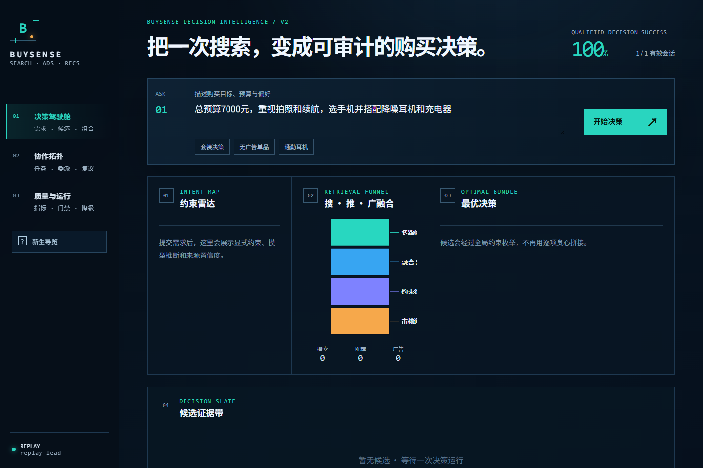
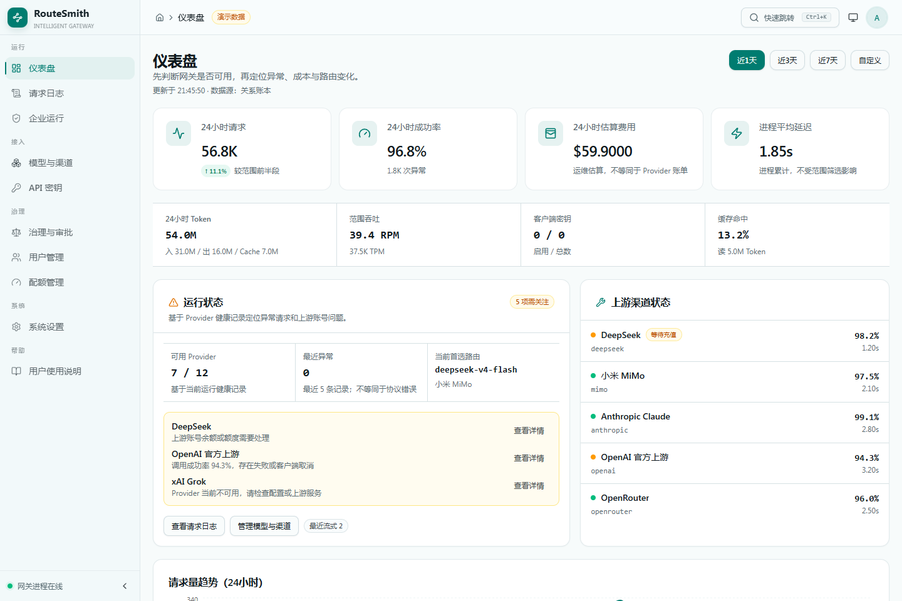

BUILD / 01ADAPTIVE AI APPLICATION

DECISIONLOOP
BuySense
智购引擎 / 3C 智能决策与搜广推系统
按业务复杂度单路由至确定性工作流或 Planner-Critic 混合链路，让语义推理与预算、兼容性等硬约束各守边界。
自适应路由Weighted RRFPlanner-Critic真实基准
阅读工程档案
AI APPLICATION ENGINEER / BACKEND SYSTEMS
聚焦 AI 应用与后端工程，持续实践 Agent 编排、知识检索、模型服务治理和可审计的数据链路，并通过公开协作沉淀真实工程记录。
围绕 Java 工具链、Agent 集成、Agentic RAG、模型运行时与 Skill 治理，持续参与多个开源项目的 Issue / PR 协作。
以下为代表性公开记录，更多协作持续累积。
补充 @Ignore 与嵌套类行为的文档说明和回归示例。
修复空签名密钥的 HMAC 校验行为，并补充回归测试。
03参与贡献RAgentnageoffer/ragent · PR #103修复 Redis 缓存反序列化失败路径，补强 Agentic RAG 的运行稳定性。
04参与贡献AgentScope Javaagentscope-ai/agentscope-java · PR #2530参与 Docker 沙箱文件传输的流式处理能力与测试完善。
05参与贡献SkillHubiflytek/skillhub · PR #689支持 API 与 Actuator 分离部署的 smoke test，并拦截 HTML 回退。
一个用自适应工作流与 Planner-Critic 解决 3C 购买决策，一个用确定性网关统一模型协议、路由和治理。

DECISION智购引擎 / 3C 智能决策与搜广推系统
按业务复杂度单路由至确定性工作流或 Planner-Critic 混合链路，让语义推理与预算、兼容性等硬约束各守边界。
智路网关 / 多模型智能路由与治理平台
通过 Provider Adapter 隔离上游协议差异，把路由、健康检查、冷却、降级、配额、预算和审计收进统一控制面。

Agent 的工程含金量，来自决策链条是否能被解释、被限制、被回放，也来自系统在失败时是否知道下一步该做什么。
复杂度识别、单路径路由、任务规划、澄清门禁与失败降级。
Schema 契约、幂等、超时、重试、熔断和执行 Trace。
多路召回、确定性精排、证据链与结果一致性校验。
离线数据集、回归门禁、运行指标和失败案例复盘。